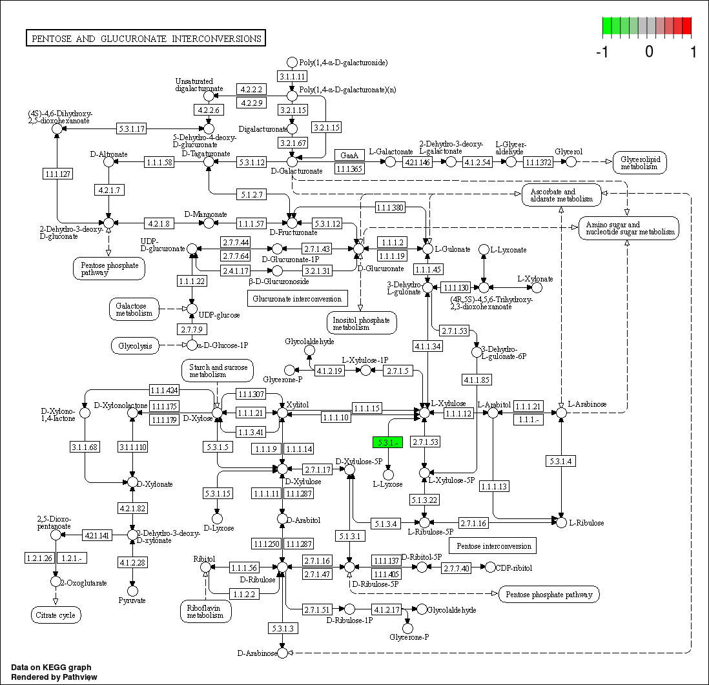
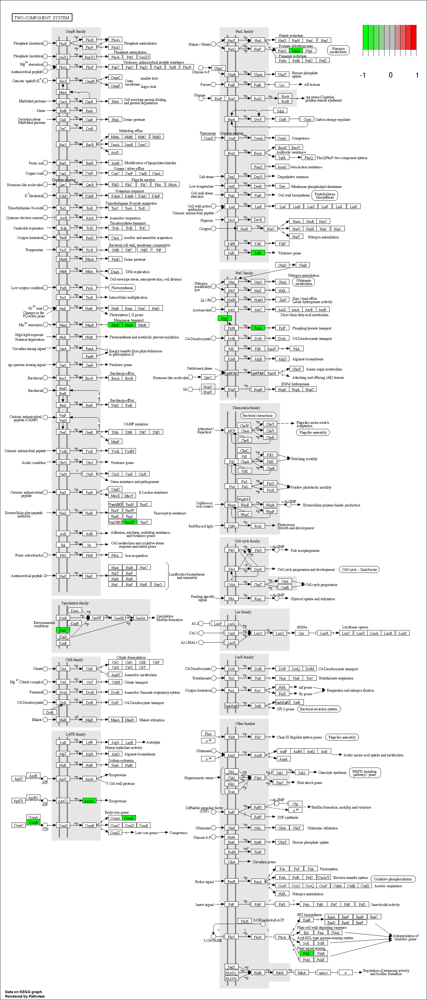

Chapter 4 Functional Analysis of KEGG
4.1 Environment setup
4.2 Read in processed profile table from script Functional_Analysis_Kegg_Pathway_preprocess.Rmd
Here we use example data from Functional_Analysis_Kegg_Pathway_preprocess.Rmd and demo metadata created from Create_Demo_Metadata.
- ../Demo_data/merged_pathway.txt, in merged pathway file, rows are pathways, columns are samples.
- ../Demo_data/Demo_metadata.xls, in metadata file, rows are samples, columns are group info.
## Some pathway ID start with 0, thus we need to read in first column as character object.
pathway_profile_tbl <- read.table('/share/projects/SOP/Functional_Analysis/Tongbangzhuo/Phase1/Kegg/Demo_data/merged_pathway.txt',header = TRUE, comment.char = '!', stringsAsFactors = FALSE , colClasses = c('# Gene Family' = 'character'), na.strings = '', sep='\t', check.names = FALSE)
## We can map pathway ID to pathway names with the mapping file in minpath.
## But it is not suggested to do the mapping in this step, because pathway names contain species characters, but we read in mapping file here anyways.
ID2Name_mapping_tbl <- read.table('/share/work/runtime/softwares/MinPath/data/KEGG-pathway.txt', header = FALSE, na.strings = '', comment.char = '', sep = '\t', colClasses = c('V1' = 'character'))
colnames(ID2Name_mapping_tbl) <- c('PathwayID', 'Label')
## Next we read in metadata (Group information)
metadata <- read.table('/share/projects/SOP/Functional_Analysis/Tongbangzhuo/Phase1/Kegg/Demo_data/Demo_metadata.xls', check.names = FALSE, header = TRUE)
metadata %<>% column_to_rownames('sample') %>% as.data.frame()4.3 Pre-process pathway data
4.3.1 Remove the pathways whose abundance are 0 across all samples
## If we use harmonic mean or median to calcualte pathway abundance from KOs, the pathway abundance may be 0, we therefore need to remove those pathways having 0 abundance across all samples.
## Sample 14295 is water, don't panick when you see loads of 0s in your data, check the sample source when you see weird numbers in profile table.
pathway_profile_tbl %<>% column_to_rownames('# Gene Family') %>% dplyr::filter(rowSums(.) > 0)4.3.2 Rescale data
## In this chunk, we use TSS (Total sum scaling) to eliminate the influence of sequencing depth on samples. After re-scaling, we can apply DA to samples.
rescaled_pathway_profile_tbl <- pathway_profile_tbl %>% apply(., 2, function(x) x/sum(x)) %>% as.data.frame()
head(rescaled_pathway_profile_tbl)## 14286 14287 14288 14289 14290 14291 14292 14293 14294 14295
## 00010 1.283440e-04 3.357828e-06 1.128246e-05 9.462703e-05 3.238698e-06 2.927676e-06 2.364773e-05 8.041385e-06 7.623641e-05 0
## 00020 6.879852e-05 9.505726e-06 1.616029e-05 1.167247e-04 1.025686e-05 1.061323e-05 2.828187e-05 2.880967e-05 7.161811e-05 0
## 00030 4.098493e-06 0.000000e+00 9.312244e-07 4.416249e-05 3.468932e-07 3.713000e-07 3.258050e-06 2.532759e-06 6.328223e-06 0
## 00040 1.150498e-06 5.421290e-07 8.982930e-07 7.318994e-06 3.960937e-07 0.000000e+00 7.673043e-07 9.071024e-07 0.000000e+00 0
## 00051 2.058384e-05 2.036986e-06 1.252159e-06 5.090830e-05 5.512341e-07 1.205087e-06 4.321008e-06 8.141639e-07 5.743959e-05 0
## 00052 1.143786e-05 4.884568e-06 2.666522e-06 6.195852e-05 2.631011e-06 8.223274e-07 6.765689e-06 3.606556e-06 1.175916e-04 0## [1] 684.3.3 Remove UNAMMPED entry
4.3.4 Filter low abundance pathway
## In this chunck, we aggregate low abundance features to one row.
## Import functions for filtering into enviroment.
## 1e-12 is an empirical threshold fot filtering low abundance feature. According to published paper [Obese Individuals with and without Type 2 Diabetes Show Different Gut Microbial Functional Capacity and Composition] https://doi.org/10.1016/j.chom.2019.07.004, pathway with top 50% mean abundance and top 50% variance are left. But in MaAsLin2，pathway with abundance less than 10-10 are filtered by default.
source('/share/projects/SOP/Functional_Analysis/Tongbangzhuo/Phase1/Kegg/Scripts/R/ultility.R')
filtered_pathway_RA_profile_tbl <- aggregate_low_abundance(input_data = rescaled_pathway_profile_tbl,
threshold = 1e-12) ## threshold should be modified based on your on study
head(filtered_pathway_RA_profile_tbl)## 14286 14287 14288 14289 14290 14291 14292 14293 14294 14295
## 00010 1.283440e-04 3.357828e-06 1.128246e-05 9.462703e-05 3.238698e-06 2.927676e-06 2.364773e-05 8.041385e-06 7.623641e-05 0
## 00020 6.879852e-05 9.505726e-06 1.616029e-05 1.167247e-04 1.025686e-05 1.061323e-05 2.828187e-05 2.880967e-05 7.161811e-05 0
## 00030 4.098493e-06 0.000000e+00 9.312244e-07 4.416249e-05 3.468932e-07 3.713000e-07 3.258050e-06 2.532759e-06 6.328223e-06 0
## 00040 1.150498e-06 5.421290e-07 8.982930e-07 7.318994e-06 3.960937e-07 0.000000e+00 7.673043e-07 9.071024e-07 0.000000e+00 0
## 00051 2.058384e-05 2.036986e-06 1.252159e-06 5.090830e-05 5.512341e-07 1.205087e-06 4.321008e-06 8.141639e-07 5.743959e-05 0
## 00052 1.143786e-05 4.884568e-06 2.666522e-06 6.195852e-05 2.631011e-06 8.223274e-07 6.765689e-06 3.606556e-06 1.175916e-04 0## [1] 674.4 Standard Analysis
- Compositional barplot
## In this chunk, we construct stacked pathway barplot to depict the pathway composition of samples, we use function plot_stacked_bar from xviz to plot.
## In case there are too much entries, we use parameter "collapse" in plot_stacked_bar function to integrate entries whose abundance are below given threshold into "Others".
## Note: make sure your graph is long enough to show the group information.
pathway_stacked_barplot <- xviz::plot_stacked_bar(otu_table = filtered_pathway_RA_profile_tbl %>% t() %>% as.data.frame(),
metadata = metadata, collapse = 1e-3, feature = 'group')
print(pathway_stacked_barplot)
- Beta diversity
## In this chunk, we inherit the concept of Beta diversity of microbial taxa data and apply it to pathway data to explore the similarity between samples.
## construct phyloseq for beta diversity analysis
phy <- phyloseq(otu_table(filtered_pathway_RA_profile_tbl, taxa_are_rows = TRUE),
sample_data(metadata))
## PCOA plot with bray_curtis distance
PCOA_plot <- xviz::plot_beta_diversity(phyloseq = phy,
feature = 'group',
method = 'bray',
label = TRUE)
print(PCOA_plot)
## PERMANOVA test & beta dispersion test
## We use PERMANOVA test to check the differences of function composition among different groups. Additionally, we also take homogeneity of group variance into consideration.
dispersion_permanova_res <- run_permanova_betadisp(physeq = phy,
vars = 'group'
)
dispersion_permanova_res## $betadisp_res
## variable p_value analysis
## 1 group 0.787 beta_dispersion_permutation999
##
## $permanova_res
## variable p_value R2 analysis
## 1 group 0.782 0.07308638 permanova_permutation9994.5 Differential analysis
4.5.1 Filter low prevalence pathway
## Low prevalence pathways are pathways only occur in minor samples.
## In this chunk we filter low prevalence data with threshold of 0.02, 0.02 is an empirical value, users should change this value according to their own study.
filtered_pathway_RA_profile_tbl <- filter_prevalence(otu_table = filtered_pathway_RA_profile_tbl,
threshold = 0.02,
taxa_are_rows = TRUE
)
head(filtered_pathway_RA_profile_tbl)## 14286 14287 14288 14289 14290 14291 14292 14293 14294 14295
## 00010 1.283440e-04 3.357828e-06 1.128246e-05 9.462703e-05 3.238698e-06 2.927676e-06 2.364773e-05 8.041385e-06 7.623641e-05 0
## 00020 6.879852e-05 9.505726e-06 1.616029e-05 1.167247e-04 1.025686e-05 1.061323e-05 2.828187e-05 2.880967e-05 7.161811e-05 0
## 00030 4.098493e-06 0.000000e+00 9.312244e-07 4.416249e-05 3.468932e-07 3.713000e-07 3.258050e-06 2.532759e-06 6.328223e-06 0
## 00040 1.150498e-06 5.421290e-07 8.982930e-07 7.318994e-06 3.960937e-07 0.000000e+00 7.673043e-07 9.071024e-07 0.000000e+00 0
## 00051 2.058384e-05 2.036986e-06 1.252159e-06 5.090830e-05 5.512341e-07 1.205087e-06 4.321008e-06 8.141639e-07 5.743959e-05 0
## 00052 1.143786e-05 4.884568e-06 2.666522e-06 6.195852e-05 2.631011e-06 8.223274e-07 6.765689e-06 3.606556e-06 1.175916e-04 0## [1] 574.5.2 DA
- DA with LM
## In this chunk, you would be using logistic regression model to find pathways that are significantly enriched in certain group.
## Due to the nature of compositional data, we cannot apply linear models to compositional data directly.
## Transformation of relative abundance data should be carried out before feeding the data to LM.
## Here, we add a very small value (1e-12) to the pathway profile table to avoid genrating NA during transformation, then use logit transformation to transform data. And eventually we apply LM to the transformed data
## Adding small value to the profile table (The value is arbitrary).
DA_pathway_RA_profile_tbl <- filtered_pathway_RA_profile_tbl + 1e-12
## Reshape profile data table and use logit transformation.
DA_pathway_RA_profile_tbl <- DA_pathway_RA_profile_tbl %>% t() %>% as.data.frame() %>% rownames_to_column('SeqID') %>% as.data.frame()
DA_metadata <- metadata %>% rownames_to_column('SeqID') %>% as.data.frame()
## Reshape dataframe into long table
DA_input <- merge(DA_pathway_RA_profile_tbl, DA_metadata, by='SeqID') %>% reshape2::melt(value.name = 'RA',
variable.name = 'PathwayIDs')
## Logit transformation
DA_input %<>% mutate(RA_logit = log(RA/(1-RA)))
## Fit data to LM
## Loop over each pathway in two groups
LM_res <- DA_input %>% split(.$PathwayIDs) %>% lapply(., function(x){
gml_res_summary <- lm(data = x, formula = RA_logit ~ group) %>% summary() %>% .$coefficients %>% as.matrix() %>% as.data.frame() %>% rownames_to_column(var = "Factors")
}
)
## Merge all result in one table
LM_res <- LM_res %>% data.table::rbindlist(idcol = "PathwayID") %>% filter(Factors != "(Intercept)")
## Adjust p value using p.adjust function from stats package, you could choose different adjust method.
LM_res %<>% mutate(adjust.p = stats::p.adjust(.$`Pr(>|t|)`,
method = 'BH'))
## Calculate effect size (Odds ratio) of each feature
LM_res %<>% mutate(OR = exp(Estimate)) %>% as.data.frame()
## Add label to pathwayIDs
LM_res %<>% merge(., ID2Name_mapping_tbl, by = 'PathwayID')- Show DA result with volcano plot
## Plot volcano plot to show effect size (x-axis) and p value (y-axis) of pathways.
## Here we only tend to hightlight pathways that satisfy adjust.p < 0.614 and OR < 0.2 at the same time.
## You can nevertheless choose different threshold accroding to your own data.
volcano_plot <- LM_res %>% mutate(p.adj.log = -log10(adjust.p), log10OR = log10(OR)) %>%
ggplot(aes(x = log10OR, y = p.adj.log)) +
geom_point(size = 0.5) +
geom_point(size = 0.5, color = "red", data = . %>% filter(adjust.p < 0.614 & OR < 0.2)) +
#geom_text_repel(size = 6/.pt, aes(label = Label), data = . %>% filter(adjust.p<0.614 & OR<0.2)) +
geom_vline(xintercept = log10(c(0.05, 0.1, 0.2, 0.5, 1, 2)), size = 0.05, color = "grey") +
geom_hline(yintercept = -log10(c(0.7)), size = 0.05, color = "grey") +
theme(aspect.ratio = 1,
panel.grid.minor = element_blank(),
panel.grid.major.x = element_blank()
) +
labs(x = "Estimated Odds Ratio", y = "FDR adjusted p-values(-log10)")
print(volcano_plot)
- Show DA result with pathview
## In this chunk, we use pathview to visualize enriched KOs in differential pathways. We will use generated from Functional_Analysis_Kegg_Pathway_preprocess.Rmd
## Step1. First we extract all KOs in differential pathways obtained from last chunk with mapping file: /share/work/runtime/softwares/MinPath/data/KEGG-mapping.txt.
## Step2. We find differential KO in two groups using the same LM method in previous chunk.
## Step3. Visualize differential KO in differential pathways with pathview.
## Read in KO profile, since we've already removed UNMAPPED and re-scaled KO profile in Functional_Analysis_Kegg_Pathway_preprocess.Rmd, we only need to filer low_abundance and low-prevalenece KOs here.
KO_profile <- read.table('/share/projects/SOP/Functional_Analysis/Tongbangzhuo/Phase1/Kegg/Demo_data/merged_knumber.txt')
## Add hearder to KO profile, because KO profile file generated from Functional_Analysis_Kegg_Pathway_preprocess.Rmd has no headers by default.
header <- read.table('/share/projects/SOP/Functional_Analysis/Tongbangzhuo/Phase1/Kegg/Demo_data/merged_pathway.txt',header = TRUE, comment.char = '!', stringsAsFactors = FALSE , colClasses = c('# Gene Family' = 'character'), na.strings = '', sep='\t', check.names = FALSE) %>% colnames()
header[1] <- 'KOs'
colnames(KO_profile) <- header
## Rescale KO profile
KO_profile %<>% column_to_rownames('KOs') %>% apply(., 2, function(x) x/sum(x)) %>% as.data.frame() %>% rownames_to_column('KOs')
## Filter low abundance KOs
filtered_KO_profile <- KO_profile %>% column_to_rownames('KOs') %>% aggregate_low_abundance(input_data = .,
threshold = 1e-12)
## Filter low-prevalenece KOs
filtered_KO_profile <- filter_prevalence(otu_table = filtered_KO_profile,
threshold = 0.02,
taxa_are_rows = TRUE
)
## Read in KO-Pathway mapping file
KO2Pathway_mapping <- read.table('/share/work/runtime/softwares/MinPath/data/KEGG-mapping.txt', colClasses = c('V1' = 'character'))
## Loop over differential pathways
Diff_pathway <- LM_res %>% filter(`Pr(>|t|)` < .05) %>% .$PathwayID %>% as.vector()
for (pathway in Diff_pathway){
## Create a list to store the log2fc of each KO in each kegg pathway
log2fc_list <- list()
## Extract all KOs in differential pathway
KO_ID_in_mapping <- KO2Pathway_mapping %>% filter(V1 == pathway) %>% .$V2
## Some KOs are not included in mapping file, here we take intersection of KO ID in mapping file and avaiable KO ID in KO profile
KO_ID <- intersect(KO_ID_in_mapping, rownames(filtered_KO_profile))
tmp_KO_profile <- filtered_KO_profile[KO_ID,]
tmp_KO_meta <- DA_metadata
## re-format tmp KO profile table
KO_DA_input <- merge(tmp_KO_profile %>% t() %>% as.data.frame() %>% rownames_to_column('SeqID'),
tmp_KO_meta,
by = 'SeqID') %>% reshape2::melt(variable.name = 'KO',
value.name = 'RA') %>% mutate(RA = RA + 1e-12) %>% mutate(RA_logit = log(RA/(1-RA)))
## DA using LM
KO_LM_res <- KO_DA_input %>% split(.$KO) %>% lapply(., function(x){
KO_gml_res_summary <- lm(data = x, formula = RA_logit ~ group) %>% summary() %>% .$coefficients %>% as.matrix() %>% as.data.frame() %>% rownames_to_column(var = "Factors")
}
)
## Merge result of all tested KOs
KO_LM_res %<>% data.table::rbindlist(idcol = "KOID") %>% filter(Factors != "(Intercept)")
## Adjust p value using p.adjust function from stats package, you could choose different adjust method.
KO_LM_res %<>% mutate(adjust.p = stats::p.adjust(.$`Pr(>|t|)`,
method = 'BH')) %>% as.data.frame()
## Filter significant differential KOs with p-value, we use pvalue < 0.05 as filtering criteria here, choose your own standard for filtering.
Sig_KO <- KO_LM_res %>% filter(`Pr(>|t|)` < 0.05) %>% .$KOID
## Calculate Log2FC of each significant KO in two groups
for (ko in Sig_KO){
## Add a small value to avoid 0
Sig_KO_profile <- tmp_KO_profile[ko, ] + 1e-12
## calculate median for each KO in two groups
Sig_KO_log2fc <- merge(Sig_KO_profile %>% t() %>% as.data.frame() %>% rownames_to_column('SeqID'),
tmp_KO_meta,
by = 'SeqID') %>% column_to_rownames('SeqID') %>% group_by(group) %>% summarize(median = median(!!as.symbol(ko))) %>% as.data.frame()
## Here we extact the median value for each group separatly
GroupA_median <- Sig_KO_log2fc %>% column_to_rownames('group') %>% .['A', 'median']
GroupB_median <- Sig_KO_log2fc %>% column_to_rownames('group') %>% .['B', 'median']
## Calculate log2FC for each KO and save the value in list
## Please be clear which group is divided by the other, it decides the direction of your log2fc
## Positive log2fc value would be highlighted in red in pathview result while negative log2fc value would be highlighted in green
log2fc_list[[ko]] <- log2(GroupA_median - GroupB_median)
}
## converst list to data frame and use it as input for pathview
input <- as.matrix(log2fc_list) %>% as.matrix()
## Visualization
pathview(input, pathway.id = pathway, species = "ko", out.suffix= 'PathView')
}
## Knit Pathview picture to RMD
graph_list <- system('ls *.PathView.png', intern = TRUE)
## In the graph(s) below, green KO are those KOs enriched in GroupB, red KO are those KOs enriched in GroupA
knitr::include_graphics(graph_list)
4.6 Session information
## ─ Session info ────────────────────────────────────────────────────────────────────────────────────────────────────────────────────────────────────────────────────
## setting value
## version R version 3.6.3 (2020-02-29)
## os Ubuntu 16.04.7 LTS
## system x86_64, linux-gnu
## ui RStudio
## language (EN)
## collate en_IN.UTF-8
## ctype en_IN.UTF-8
## tz Asia/Hong_Kong
## date 2022-06-29
## rstudio 1.1.419 (server)
## pandoc 2.7.3 @ /usr/bin/ (via rmarkdown)
##
## ─ Packages ────────────────────────────────────────────────────────────────────────────────────────────────────────────────────────────────────────────────────────
## ! package * version date (UTC) lib source
## abind 1.4-5 2016-07-21 [1] CRAN (R 3.6.3)
## ade4 1.7-17 2021-06-17 [1] CRAN (R 3.6.3)
## ALDEx2 1.18.0 2019-10-29 [1] Bioconductor
## annotate 1.64.0 2019-10-29 [1] Bioconductor
## AnnotationDbi * 1.48.0 2019-10-29 [1] Bioconductor
## ape 5.5 2021-04-25 [1] CRAN (R 3.6.3)
## assertthat 0.2.1 2019-03-21 [2] CRAN (R 3.6.3)
## backports 1.4.1 2021-12-13 [1] CRAN (R 3.6.3)
## base64enc 0.1-3 2015-07-28 [2] CRAN (R 3.6.3)
## bayesm 3.1-4 2019-10-15 [1] CRAN (R 3.6.3)
## biglm 0.9-2.1 2020-11-27 [1] CRAN (R 3.6.3)
## Biobase * 2.46.0 2019-10-29 [2] Bioconductor
## BiocGenerics * 0.32.0 2019-10-29 [2] Bioconductor
## BiocManager 1.30.16 2021-06-15 [1] CRAN (R 3.6.3)
## BiocParallel * 1.20.1 2019-12-21 [2] Bioconductor
## biomformat 1.14.0 2019-10-29 [1] Bioconductor
## Biostrings 2.54.0 2019-10-29 [1] Bioconductor
## bit 4.0.4 2020-08-04 [1] CRAN (R 3.6.3)
## bit64 4.0.5 2020-08-30 [1] CRAN (R 3.6.3)
## bitops 1.0-7 2021-04-24 [1] CRAN (R 3.6.3)
## blob 1.2.2 2021-07-23 [1] CRAN (R 3.6.3)
## bookdown 0.24 2021-09-02 [1] CRAN (R 3.6.3)
## brio 1.1.3 2021-11-30 [2] CRAN (R 3.6.3)
## broom 0.7.12 2022-01-28 [1] CRAN (R 3.6.3)
## bslib 0.3.1 2021-10-06 [1] CRAN (R 3.6.3)
## cachem 1.0.5 2021-05-15 [1] CRAN (R 3.6.3)
## callr 3.7.0 2021-04-20 [2] CRAN (R 3.6.3)
## car 3.0-12 2021-11-06 [1] CRAN (R 3.6.3)
## carData 3.0-4 2020-05-22 [1] CRAN (R 3.6.3)
## caTools 1.18.2 2021-03-28 [1] CRAN (R 3.6.3)
## cellranger 1.1.0 2016-07-27 [1] CRAN (R 3.6.3)
## checkmate 2.0.0 2020-02-06 [1] CRAN (R 3.6.3)
## circlize * 0.4.13 2021-06-09 [1] CRAN (R 3.6.3)
## cli 3.1.0 2021-10-27 [1] CRAN (R 3.6.3)
## clue 0.3-59 2021-04-16 [1] CRAN (R 3.6.3)
## cluster 2.1.0 2019-06-19 [2] CRAN (R 3.6.3)
## codetools 0.2-16 2018-12-24 [2] CRAN (R 3.6.3)
## colorspace 2.0-2 2021-06-24 [1] CRAN (R 3.6.3)
## ComplexHeatmap * 2.2.0 2019-10-29 [1] Bioconductor
## compositions 2.0-2 2021-07-14 [1] CRAN (R 3.6.3)
## cowplot * 1.1.1 2020-12-30 [1] CRAN (R 3.6.3)
## crayon 1.5.0 2022-02-14 [1] CRAN (R 3.6.3)
## dada2 * 1.14.1 2020-02-22 [1] Bioconductor
## data.table * 1.14.0 2021-02-21 [1] CRAN (R 3.6.3)
## DBI 1.1.1 2021-01-15 [1] CRAN (R 3.6.3)
## dbplyr 2.1.1 2021-04-06 [1] CRAN (R 3.6.3)
## DelayedArray * 0.12.3 2020-04-09 [2] Bioconductor
## DelayedMatrixStats 1.8.0 2019-10-29 [1] Bioconductor
## DEoptimR 1.0-9 2021-05-24 [1] CRAN (R 3.6.3)
## desc 1.4.1 2022-03-06 [2] CRAN (R 3.6.3)
## DESeq2 * 1.26.0 2019-10-29 [1] Bioconductor
## devtools 2.4.3 2021-11-30 [1] CRAN (R 3.6.3)
## digest 0.6.29 2021-12-01 [1] CRAN (R 3.6.3)
## dplyr * 1.0.6 2021-05-05 [1] CRAN (R 3.6.3)
## edgeR 3.28.1 2020-02-26 [1] Bioconductor
## ellipsis 0.3.2 2021-04-29 [1] CRAN (R 3.6.3)
## EnhancedVolcano * 1.4.0 2019-10-29 [1] Bioconductor
## evaluate 0.15 2022-02-18 [2] CRAN (R 3.6.3)
## fansi 1.0.2 2022-01-14 [1] CRAN (R 3.6.3)
## farver 2.1.0 2021-02-28 [2] CRAN (R 3.6.3)
## fastmap 1.1.0 2021-01-25 [1] CRAN (R 3.6.3)
## fdrtool 1.2.17 2021-11-13 [1] CRAN (R 3.6.3)
## forcats * 0.5.1 2021-01-27 [1] CRAN (R 3.6.3)
## foreach 1.5.2 2022-02-02 [2] CRAN (R 3.6.3)
## foreign 0.8-75 2020-01-20 [2] CRAN (R 3.6.3)
## formatR 1.12 2022-03-31 [2] CRAN (R 3.6.3)
## Formula 1.2-4 2020-10-16 [1] CRAN (R 3.6.3)
## fs 1.5.2 2021-12-08 [1] CRAN (R 3.6.3)
## futile.logger * 1.4.3 2016-07-10 [2] CRAN (R 3.6.3)
## futile.options 1.0.1 2018-04-20 [2] CRAN (R 3.6.3)
## genefilter 1.68.0 2019-10-29 [1] Bioconductor
## geneplotter 1.64.0 2019-10-29 [1] Bioconductor
## generics 0.1.2 2022-01-31 [1] CRAN (R 3.6.3)
## GenomeInfoDb * 1.22.1 2020-03-27 [2] Bioconductor
## GenomeInfoDbData 1.2.2 2020-08-24 [2] Bioconductor
## GenomicAlignments 1.22.1 2019-11-12 [1] Bioconductor
## GenomicRanges * 1.38.0 2019-10-29 [2] Bioconductor
## getopt 1.20.3 2019-03-22 [1] CRAN (R 3.6.3)
## GetoptLong 1.0.5 2020-12-15 [1] CRAN (R 3.6.3)
## ggExtra * 0.9 2019-08-27 [1] CRAN (R 3.6.3)
## ggplot2 * 3.3.5 2021-06-25 [1] CRAN (R 3.6.3)
## ggpubr * 0.4.0 2020-06-27 [1] CRAN (R 3.6.3)
## ggrepel * 0.9.1 2021-01-15 [2] CRAN (R 3.6.3)
## ggsci * 2.9 2018-05-14 [1] CRAN (R 3.6.3)
## ggsignif 0.6.3 2021-09-09 [1] CRAN (R 3.6.3)
## glmnet 4.1-2 2021-06-24 [1] CRAN (R 3.6.3)
## GlobalOptions 0.1.2 2020-06-10 [1] CRAN (R 3.6.3)
## glue 1.6.1 2022-01-22 [1] CRAN (R 3.6.3)
## GMPR 0.1.3 2021-05-17 [1] local
## gplots 3.1.1 2020-11-28 [1] CRAN (R 3.6.3)
## graph 1.64.0 2019-10-29 [1] Bioconductor
## gridExtra 2.3 2017-09-09 [2] CRAN (R 3.6.3)
## gtable 0.3.0 2019-03-25 [2] CRAN (R 3.6.3)
## gtools 3.9.2 2021-06-06 [1] CRAN (R 3.6.3)
## haven 2.4.1 2021-04-23 [1] CRAN (R 3.6.3)
## highr 0.9 2021-04-16 [1] CRAN (R 3.6.3)
## Hmisc 4.5-0 2021-02-28 [1] CRAN (R 3.6.3)
## hms 1.1.1 2021-09-26 [1] CRAN (R 3.6.3)
## htmlTable 2.3.0 2021-10-12 [1] CRAN (R 3.6.3)
## htmltools 0.5.2 2021-08-25 [1] CRAN (R 3.6.3)
## htmlwidgets 1.5.4 2021-09-08 [2] CRAN (R 3.6.3)
## httpuv 1.6.1 2021-05-07 [1] CRAN (R 3.6.3)
## httr 1.4.3 2022-05-04 [2] CRAN (R 3.6.3)
## hwriter 1.3.2 2014-09-10 [1] CRAN (R 3.6.3)
## igraph 1.3.1 2022-04-20 [2] CRAN (R 3.6.3)
## IHW 1.14.0 2019-10-29 [1] Bioconductor
## IRanges * 2.20.2 2020-01-13 [2] Bioconductor
## iterators 1.0.14 2022-02-05 [2] CRAN (R 3.6.3)
## jpeg 0.1-9 2021-07-24 [1] CRAN (R 3.6.3)
## jquerylib 0.1.4 2021-04-26 [1] CRAN (R 3.6.3)
## jsonlite 1.8.0 2022-02-22 [2] CRAN (R 3.6.3)
## KEGGgraph 1.46.0 2019-10-29 [1] Bioconductor
## KEGGREST 1.26.1 2019-11-06 [1] Bioconductor
## KernSmooth 2.23-16 2019-10-15 [2] CRAN (R 3.6.3)
## knitr 1.36 2021-09-29 [1] CRAN (R 3.6.3)
## labeling 0.4.2 2020-10-20 [2] CRAN (R 3.6.3)
## lambda.r 1.2.4 2019-09-18 [2] CRAN (R 3.6.3)
## later 1.3.0 2021-08-18 [2] CRAN (R 3.6.3)
## lattice * 0.20-38 2018-11-04 [2] CRAN (R 3.6.3)
## latticeExtra 0.6-29 2019-12-19 [1] CRAN (R 3.6.3)
## lazyeval 0.2.2 2019-03-15 [2] CRAN (R 3.6.3)
## lifecycle 1.0.1 2021-09-24 [1] CRAN (R 3.6.3)
## limma 3.42.2 2020-02-03 [2] Bioconductor
## locfit 1.5-9.4 2020-03-25 [1] CRAN (R 3.6.3)
## lpsymphony 1.14.0 2019-10-29 [1] Bioconductor (R 3.6.3)
## lubridate 1.7.10 2021-02-26 [1] CRAN (R 3.6.3)
## Maaslin2 1.7.3 2022-03-23 [1] Github (biobakery/maaslin2@8d090e4)
## magrittr * 2.0.2 2022-01-26 [1] CRAN (R 3.6.3)
## MASS 7.3-54 2021-05-03 [1] CRAN (R 3.6.3)
## Matrix 1.3-4 2021-06-01 [1] CRAN (R 3.6.3)
## matrixStats * 0.60.0 2021-07-26 [1] CRAN (R 3.6.3)
## mbzinb 0.2 2021-06-23 [1] local
## memoise 2.0.1 2021-11-26 [2] CRAN (R 3.6.3)
## metagenomeSeq 1.28.2 2020-02-03 [1] Bioconductor
## metamicrobiomeR 1.1 2021-02-03 [1] local
## mgcv 1.8-31 2019-11-09 [2] CRAN (R 3.6.3)
## microbiome 1.8.0 2019-10-29 [1] Bioconductor
## mime 0.12 2021-09-28 [2] CRAN (R 3.6.3)
## miniUI 0.1.1.1 2018-05-18 [1] CRAN (R 3.6.3)
## modelr 0.1.8 2020-05-19 [1] CRAN (R 3.6.3)
## multtest 2.42.0 2019-10-29 [2] Bioconductor
## munsell 0.5.0 2018-06-12 [2] CRAN (R 3.6.3)
## mvtnorm 1.1-3 2021-10-08 [1] CRAN (R 3.6.3)
## nlme 3.1-144 2020-02-06 [2] CRAN (R 3.6.3)
## nnet 7.3-12 2016-02-02 [2] CRAN (R 3.6.3)
## optparse 1.7.1 2021-10-08 [1] CRAN (R 3.6.3)
## org.Hs.eg.db * 3.10.0 2021-12-08 [1] Bioconductor
## pathview * 1.26.0 2019-10-29 [1] Bioconductor
## pcaPP 1.9-74 2021-04-23 [1] CRAN (R 3.6.3)
## permute * 0.9-5 2019-03-12 [1] CRAN (R 3.6.3)
## phyloseq * 1.30.0 2019-10-29 [1] Bioconductor
## pillar 1.7.0 2022-02-01 [1] CRAN (R 3.6.3)
## pkgbuild 1.3.1 2021-12-20 [2] CRAN (R 3.6.3)
## pkgconfig 2.0.3 2019-09-22 [2] CRAN (R 3.6.3)
## pkgload 1.2.4 2021-11-30 [2] CRAN (R 3.6.3)
## plotly * 4.10.0 2021-10-09 [1] CRAN (R 3.6.3)
## plyr 1.8.7 2022-03-24 [2] CRAN (R 3.6.3)
## png 0.1-7 2013-12-03 [1] CRAN (R 3.6.3)
## prettyunits 1.1.1 2020-01-24 [2] CRAN (R 3.6.3)
## processx 3.5.3 2022-03-25 [2] CRAN (R 3.6.3)
## promises 1.2.0.1 2021-02-11 [2] CRAN (R 3.6.3)
## protoclust 1.6.3 2019-01-31 [1] CRAN (R 3.6.3)
## ps 1.7.0 2022-04-23 [2] CRAN (R 3.6.3)
## pscl 1.5.5 2020-03-07 [1] CRAN (R 3.6.3)
## purrr * 0.3.4 2020-04-17 [2] CRAN (R 3.6.3)
## qvalue 2.18.0 2019-10-29 [1] Bioconductor
## R6 2.5.1 2021-08-19 [1] CRAN (R 3.6.3)
## RAIDA 1.0 2021-06-23 [1] local
## ranacapa 0.1.0 2021-06-18 [1] Github (gauravsk/ranacapa@58c0cab)
## RColorBrewer * 1.1-3 2022-04-03 [2] CRAN (R 3.6.3)
## Rcpp * 1.0.7 2021-07-07 [1] CRAN (R 3.6.3)
## RcppParallel 5.1.4 2021-05-04 [1] CRAN (R 3.6.3)
## RCurl 1.98-1.6 2022-02-08 [2] CRAN (R 3.6.3)
## readr * 2.0.0 2021-07-20 [1] CRAN (R 3.6.3)
## readxl * 1.3.1 2019-03-13 [1] CRAN (R 3.6.3)
## remotes 2.4.2 2021-11-30 [1] CRAN (R 3.6.3)
## reprex 2.0.1 2021-08-05 [1] CRAN (R 3.6.3)
## reshape 0.8.9 2022-04-12 [1] CRAN (R 3.6.3)
## reshape2 * 1.4.4 2020-04-09 [2] CRAN (R 3.6.3)
## Rgraphviz 2.30.0 2019-10-29 [1] Bioconductor
## rhdf5 2.30.1 2019-11-26 [1] Bioconductor
## Rhdf5lib 1.8.0 2019-10-29 [1] Bioconductor
## rJava 1.0-5 2021-09-24 [1] CRAN (R 3.6.3)
## rjson 0.2.20 2018-06-08 [1] CRAN (R 3.6.3)
## R rlang 1.0.2 <NA> [2] <NA>
## rmarkdown 2.11 2021-09-14 [1] CRAN (R 3.6.3)
## robustbase 0.93-9 2021-09-27 [1] CRAN (R 3.6.3)
## rpart 4.1-15 2019-04-12 [2] CRAN (R 3.6.3)
## rprojroot 2.0.2 2020-11-15 [1] CRAN (R 3.6.3)
## Rsamtools 2.2.3 2020-02-23 [1] Bioconductor
## RSQLite 2.2.7 2021-04-22 [1] CRAN (R 3.6.3)
## rstatix 0.7.0 2021-02-13 [1] CRAN (R 3.6.3)
## rstudioapi 0.13 2020-11-12 [2] CRAN (R 3.6.3)
## Rtsne 0.15 2018-11-10 [1] CRAN (R 3.6.3)
## rvest 1.0.2 2021-10-16 [1] CRAN (R 3.6.3)
## S4Vectors * 0.24.4 2020-04-09 [2] Bioconductor
## sass 0.4.0 2021-05-12 [1] CRAN (R 3.6.3)
## scales 1.2.0 2022-04-13 [2] CRAN (R 3.6.3)
## seqinr * 4.2-8 2021-06-09 [1] CRAN (R 3.6.3)
## sessioninfo 1.2.2 2021-12-06 [2] CRAN (R 3.6.3)
## shape 1.4.6 2021-05-19 [1] CRAN (R 3.6.3)
## shiny 1.7.1 2021-10-02 [1] CRAN (R 3.6.3)
## ShortRead 1.44.3 2020-02-03 [1] Bioconductor
## slam 0.1-49 2021-11-17 [1] CRAN (R 3.6.3)
## VP stringi 1.7.6 2021-08-25 [2] CRAN (R 3.6.3) (on disk 1.7.4)
## stringr * 1.4.0 2019-02-10 [2] CRAN (R 3.6.3)
## SummarizedExperiment * 1.16.1 2019-12-19 [2] Bioconductor
## survival 3.1-8 2019-12-03 [2] CRAN (R 3.6.3)
## tensorA 0.36.2 2020-11-19 [1] CRAN (R 3.6.3)
## testthat 3.1.4 2022-04-26 [2] CRAN (R 3.6.3)
## textshape 1.7.3 2021-05-28 [1] CRAN (R 3.6.3)
## tibble * 3.1.6 2021-11-07 [1] CRAN (R 3.6.3)
## tidyr * 1.2.0 2022-02-01 [1] CRAN (R 3.6.3)
## tidyselect 1.1.1 2021-04-30 [1] CRAN (R 3.6.3)
## tidyverse * 1.3.1 2021-04-15 [1] CRAN (R 3.6.3)
## tzdb 0.2.0 2021-10-27 [1] CRAN (R 3.6.3)
## UpSetR 1.4.0 2019-05-22 [1] CRAN (R 3.6.3)
## usethis 2.1.6 2022-05-25 [2] CRAN (R 3.6.3)
## utf8 1.2.2 2021-07-24 [1] CRAN (R 3.6.3)
## vctrs 0.3.8 2021-04-29 [1] CRAN (R 3.6.3)
## vegan * 2.5-7 2020-11-28 [1] CRAN (R 3.6.3)
## VennDiagram * 1.7.1 2021-12-02 [1] CRAN (R 3.6.3)
## viridisLite 0.4.0 2021-04-13 [2] CRAN (R 3.6.3)
## vroom 1.5.7 2021-11-30 [1] CRAN (R 3.6.3)
## withr 2.4.3 2021-11-30 [1] CRAN (R 3.6.3)
## Wrench 1.4.0 2019-10-29 [1] Bioconductor
## xfun 0.23 2021-05-15 [1] CRAN (R 3.6.3)
## xlsx * 0.6.5 2020-11-10 [1] CRAN (R 3.6.3)
## xlsxjars 0.6.1 2014-08-22 [1] CRAN (R 3.6.3)
## XMAS * 0.0.0.9000 2022-03-23 [1] local
## XML 3.99-0.3 2020-01-20 [1] CRAN (R 3.6.3)
## xml2 1.3.3 2021-11-30 [2] CRAN (R 3.6.3)
## xtable 1.8-4 2019-04-21 [1] CRAN (R 3.6.3)
## XVector 0.26.0 2019-10-29 [2] Bioconductor
## xviz * 1.1.0 2021-01-14 [1] local
## yaml 2.2.2 2022-01-25 [1] CRAN (R 3.6.3)
## zlibbioc 1.32.0 2019-10-29 [2] Bioconductor
##
## [1] /share/home/tongbangzhuo/R/x86_64-pc-linux-gnu-library/3.6
## [2] /opt/R-3.6.3/lib/R/library
##
## V ── Loaded and on-disk version mismatch.
## P ── Loaded and on-disk path mismatch.
## R ── Package was removed from disk.
##
## ───────────────────────────────────────────────────────────────────────────────────────────────────────────────────────────────────────────────────────────────────